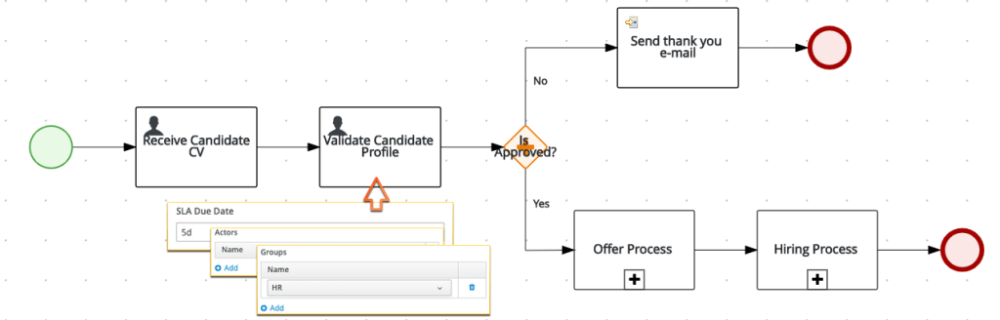
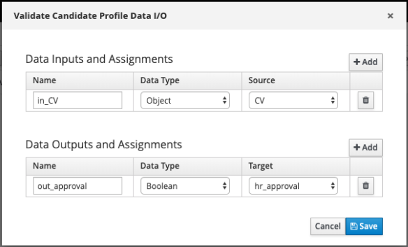
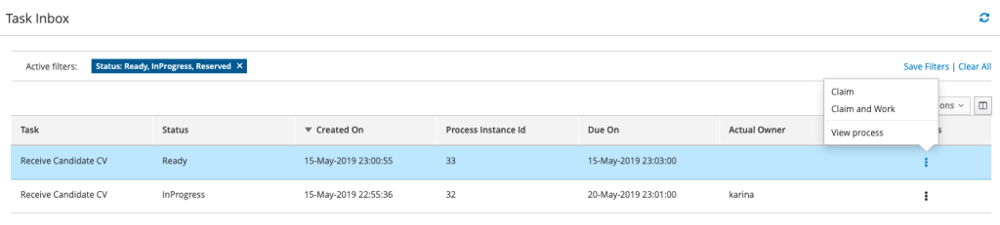
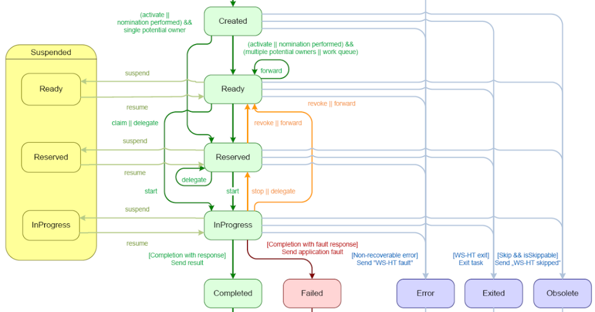
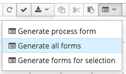
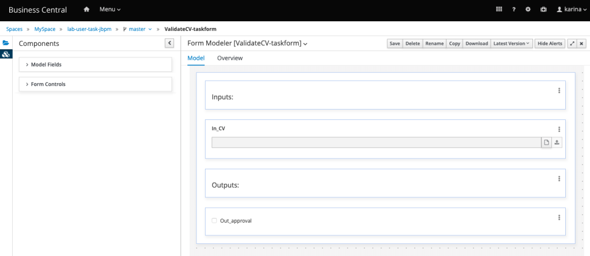
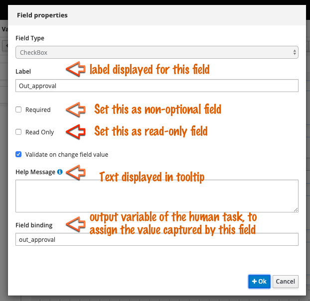
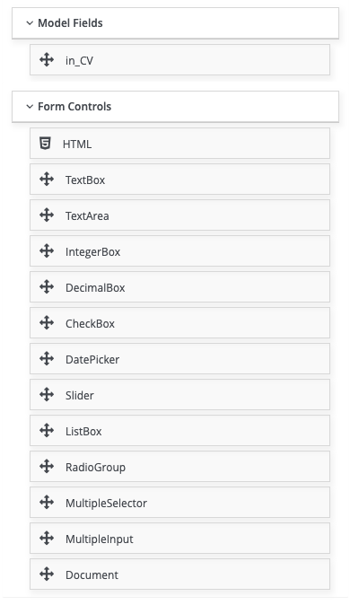
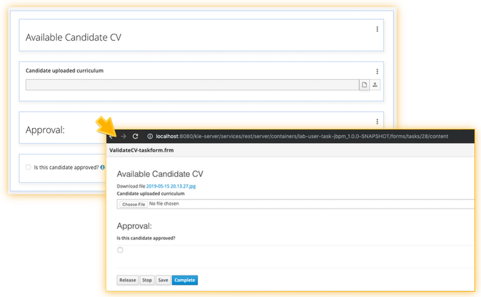

User Tasks and Forms
User Tasks allow the interaction of humans with a set of automated tasks. In this way, a series of automatic tasks can be triggered before – providing input for – human decisions, and the output of the user task can then be used to define further actions of a flow.
User tasks have a more elaborate lifecycle than other activity tasks. The lifecycle of a Human Task involves states and actions. The actions that can be used to interact with the human task and change its state.
Considering the lifecycle of a human task, let’s talk about some possibilities that can be achieved out-of-the-box by using a user task. Here is hiring process an example of a process that has a different ending based on a human decision:

Once started, the candidate should send his curriculum vitae (first user task). The next step is that someone from the Human Resource team picks this task and do an analysis over the candidate curriculum. Based on this analysis, this person should decide whether this is or not an appropriate candidate for the role. This decision is stored in a process variable, that will be evaluated by the exclusive gateway, defining if the candidate was reproved (send an email) or approved (start hiring processes).Let’s analyze some important concepts based on this example:
- The process definition says that the Validate Candidate Profile should be done by someone from the “Human Resources” team. This task is assigned to a group.
- This task has an SLA, which determines 5 days as maximum expected duration to the HR group – team – to finish this task. The SLA can also be an expression which holds a process variable like #{determinedDueDate} .
User task variables can be manipulated by the human that owns the task. This is how the process variables are updated by humans involved in this execution:

The process contains two variables named CV and hr_approval. The user that interacts with this task, has access to the variables specified in “Data Inputs and Assignments“, in this case, in_CV. The user can interact with this task in many ways – a form in a web application, mobile app, business central, google home, etc – in whichever way, in the end, this interaction will be converted into a request submitted to the engine.When the user completes this task, his outputs with the answer are stored into “Data Outputs and Assignments” fields, in this case,out_approval. This simple boolean which tells if the candidate was approved or not, will be automatically assigned to the process variable hr_approval in order to be used in other steps of this hiring flow.
Interacting with User Tasks via Business Central
A client application with a customized layout can interact with human tasks via the available APIs, but for now, let’s see how to interact with this task using business central. Business Central provides a Task Inbox, accessible via the menu.
It is required that the user belongs to the HR group, otherwise, he is not a potential owner and won’t be able to visualize the tasks. When the user opens the inbox, he/she will see the list of tasks which he/she is a potential owner:

There are two tasks in this list, because two candidates applied and we have two running process instances. One of the tasks is currently in progress and being executed by a user named karina. Another task is “Ready” to be executed and has no owner. Notice the possible actions for this task: Claim and Claim and Work. But what exactly does this mean?In order to understand this, we should go back to the WS-HT specification and the lifecycle of a human task.
Human Task Lifecycle
According to the WS-HT specification, human tasks can be in the following states:
- Created, Ready, Reserved, In Progress, Suspended, Completed, Failed, Error, Exited or Obsolete.
And, they can the possible actions can be used upon the human task:
- suspend, resume, forward, revoke, claim, start, stop, delegate, complete, exit, skip, nominate, release.
jBPM provides Java client API and REST API available to interact with the task and move it through states. Check these states and actions represented on the following diagram:

jBPM implements an easy and comprehensible flow based on Web Services Human Task specification (a.k.a WS-HT Spec).http://download.boulder.ibm.com/ibmdl/pub/software/dw/specs/ws-bpel4people/WS-HumanTask_v1.pdf
But how is this translated into a real example? Let’s get back to our hiring process, in the point when the candidate finishes the first task, and the second task is activated:
- The engine creates the second human task “Validate Candidate Profile”;
- Once the engine finishes this creation, the task will be ready for users of this group;
- All the members from this group (HR) are potential owners and consequently, can see this task, but only one at a time can claim it, be the owner of it.
- Once claimed, this task will be reserved for this user, and will no longer be part of the list presented to the group.
- The user now has the option to start actually working in this task;
- The user finishes the analysis and can complete the task, providing the required data.
As showed above, a whole lifecycle of management of user interactions is already provided out-of-the-box by jBPM. The user role also matters. It is directly related to the actions that can be executed over a task.
Form Modeler
We are now going to enhance the human interaction by using forms. The Form Modeler is a component from Business Central which allows the Business Automation Specialist to create forms in a low-code manner. It significantly shortens the time spent into forms creation.
These forms are .frm files delivered as part of the kjar and can be also consumed via rest and embedded into custom client applications. This makes it easy to consume the whole process from a single point, without propagating changes to other services and impacting their functioning.
See how simple it is to create a form for the hiring process: once all the input and output variables are properly defined for user tasks, look for the option Generate all forms in the process designer toolbar.

This option will automatically create one form for each human task present in this process definition with all the fields configured as input/output assignment variables.
All the forms are made available and are accessible via the project lateral toolbar, or in the project main page. The lateral toolbar shows the assets categorized by type.
By clicking on one of the forms, in this example, “ValidateCV-taskform”, the form modeler will open with the generated form. This generated form has a proper field for every variable configured on the input/output assignment variables of the human task. It takes in consideration the variable class type, so for example, for the document it provided a file upload component. For the boolean field, it provided a checkbox.

All the BA specialist needs to do is adjust the form according to the domain knowledge and requirements. By clicking on the three dots on the right corner, of each field, options for editing and removing are available. To reorganize items, simply drag and drop them. See the edition of the checkbox for a more appropriate label:

The HTML field type editor is a rich text editor to give more flexibility to the user. There is a whole set of components to be used into the form creation. Also, if the user adds new variables or wants to remove them, they will be displayed in the “Model Fields” tab to be used dragged into the form is necessary.

And this is how, after three minutes, a whole new reusable form got created without much coding:

In order to test it, the project needs to be deployed to kie server. Once deployed, when the task is activated, the results can be visualized via business central when clicking on the task. The same form could be embedded into a custom client application.The form can be obtained in two ways:
- XML format with plain details:
- For process form: GET /server/containers/{containerId}/forms/processes/{processId}
- For task form: GET /server/containers/{containerId}/forms/tasks/{taskInstanceId}
- Rendered format
- For process forms: GET /server/containers/{containerId}/forms/processes/{processId}/content
- For case forms: GET /server/containers/{containerId}/forms/cases/{caseDefId}/content
- For task forms: GET /server/containers/{containerId}/forms/tasks/{taskInstanceId}/content
This blog post is part of the fourth section of the jBPM Getting started series:
Effective modeling, Integration and Delivery.